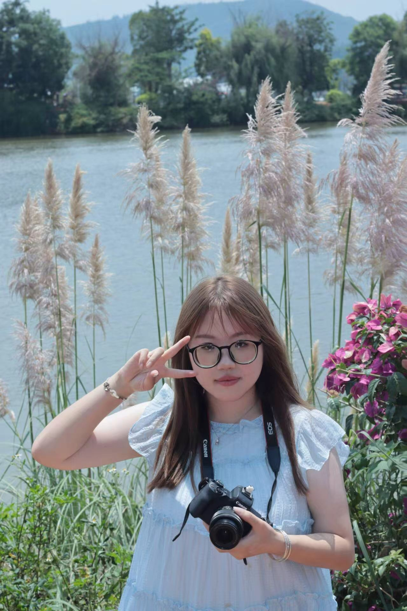

正在翻开作品…
01 / LQY’S LITTLE UNIVERSE
短视频编导 · 用感受抵达故事
在我的小宇宙里，
会讲故事，
也会把故事拍下来。
Hello，我是李乔英，一个把细碎感受写进脚本、把生活光影留在镜头里的人。
擅长文案编辑、摄影、策划。
想用心打造能够产生共鸣与回响的作品。
敏感地感受认真地记录完整地执行

CONTENT & VIDEO
02 / EXPERIENCE
每一步，都算数。
我习惯沉下心记录普通人的故事，始终相信相信的力量。
正在加载技能…
正在排开经历…
03 / WRITING
在开拍之前，先写一遍。
我是一个对光影、语气和沉默都很敏感的人。万物落进视野时，脑海总会先慢慢酝酿：这一秒为什么动人，它还可以怎样被讲述。于是我先用文字留住思绪，再把想象拆成镜头，让那些转瞬即逝的感受真正落地。
正在整理作品…
04 / VISUAL DIARY
光落下来的时候，我在看。
有些美好不需要被解释：一束晚光、一次回头、风掠过树叶的声音。我把它们收进这本会翻页的影像日记。
正在装订影像笔记…
01 / 07
06 / RECEIPTS & LETTERS
把认真留下来，
也把下一次打开。
每一张票根，都是一次项目里真实发生过的投入。
正在归档荣誉…
TO THE NEXT COLLABORATOR
你好，我是李乔英。
期待加入一个愿意认真做内容的团队：一起从一个模糊的想法出发，拍成具体、动人又有效的作品。
加载联系信息中…
LQY / 2026
正在排版内容…